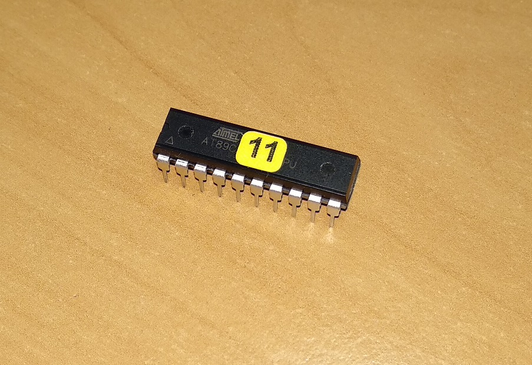
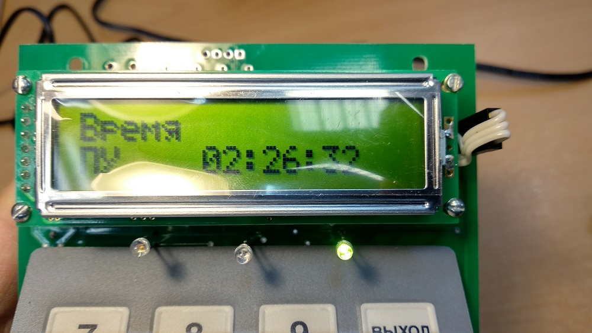

Портальный монитор
До того, как отдать блоки в контейнерах на сборку, необходимо записать внутренние номера БД в зеленую папку — после того, как контейнеры будут подключены к системе, узнать номер будет не просто. Пульт с новой версией прошивки подключается к компьютеру только с помощью ПО ARGUS, а в этой программе нет возможности узнать скорость счета по каждому БД отдельно, поэтому данные скорости счета для протокола поверки необходимо снимать до установки контейнеров в шкаф.
Настроить пульт ПУ-АТ900
Прошивка пульта
Получить на сладе:
- Микросхему AT89S52-24PU
- Микросхему AT27C512R
- Батарейку Panasonic 2032
- Микросхему AT89C2051(одна для УС и одна для МДВ)

- Подключить программатор
- Запустить программу ChipProg USB
- Вставить микросхему (Ключ вверху!)
- Выбрать микросхему ST Microelectronics M27C512 (Select device)
- Выбрать прошивку — _Portal.hex (18.06.2019)

- Device status: In socket. Ready
- Выбрать Auto programming
- Кликнуть Execute (или кнопку "Start" на программаторе)
- После прошивки наклеить на микросхемк наклейку с версией прошивки
 Прошить микросхемы (AT89C2501) для устройства сигнализации (УС — прошивается 11 адресом)
и модуля дискретного
ввода (МДВ — прошивается 12 адресом)
Прошивается микросхема аналогично 512-й, только необходимо выбрать в программе нужный тип микросхемы
(AT89C2501), и прошивку (ppp11s.a03 для УС, ppp12s.a03 для МДВ)
Прошить микросхемы (AT89C2501) для устройства сигнализации (УС — прошивается 11 адресом)
и модуля дискретного
ввода (МДВ — прошивается 12 адресом)
Прошивается микросхема аналогично 512-й, только необходимо выбрать в программе нужный тип микросхемы
(AT89C2501), и прошивку (ppp11s.a03 для УС, ppp12s.a03 для МДВ)
- После на микросхему нанаклеить наклейку с адресом 
Настройка пульта
- Микросхему AT89S52, прошитую M27C512 и батарейку установить на плату
- Установить перемычку в режим настройки.
- Подключить адаптер питания
- Перед тем, как отдать плату пульта на сборку, обязательно проверить срабатывание ВСЕХ клавиш клавиатуры
- Подстроечным резистором выставить правильный уровень яркости сегментов ЖКИ.
- Вот что будет на экране:
- Каждая буква "е" на экране — это адрес каждого БД, таким образом к одному пульту можно подключить до десяти БД
- Клавишами "вправо" "влево" перемещаем курсор, клавишей "ввод" можно выбрать два варианта отображения: БД включен в систему и БД отсутствует. Номер позиции соответствует адресу для БД (т.е. от 1 до 10) Каждому из подключенных датчиков, с помощью цифровой клавиатуры, необходимо определить тип БД — для портальных мониторов это клавиша "5" (БДРМ-05) Для БДКГ в контейнерах (-11/1, -35, -19), а точнее для 941-х адаптеров с подключенными контейнерами, тип БД выбирается "БДРМ-05" (клавиша 5), если в состав портального монитора входит БДКН, то для такого БД выбрать соответствующий тип нейтронного БД (клавиша 3, 4 или 6)
- Ввод параметров подтверждается клавишей "Ввод"
- К каждому блоку подключить сигнализацию и МДВ. Клавишами "вправо" "влево" выбрать БД, затем клавишей "1" и "2" подключить сигнализацию и МДВ с 11-м или 12-м адресом соответственно. Стереть адрес можно клавишей "выход".
- Период опроса выставить 1 секунду.
- Адрес пульта — 1
- Сбросить историю клавишей "0".
- После завершения настройки вернуться на начальный экран и нажать клавишу "Выход" для сохранения введенных параметров!
- Отключить питание и переставить перемычку в рабочий режим.
- Включить питание. Дождаться загрузки Пульт попытается опросить все настроенные в нем адреся БД и УС и, не найдя их, выдаст соответствующее предупреждение — при этом зеленый диод будет мигать, это значит в работе пульта есть какая-то ошибка. Прежде всего необходимо установить новый пароль — "555". По умолчанию паролем является время ПУ, поэтому необходимо зайти в режим времени,
- выбрать время ПУ и запомнить его 
- (так, пароль ПУ с картинки будет "226"). После этого зайти в режим изменения пароля и выбрать "изменить пароль".
- Ввести запомненное время, а в качестве нового пароля ввести 555.
- После ввода нового пароля ПУ выдаст сообщение о принятии нового пароля. Теперь паролем ПУ будет 555
- Установить Дату и время ПУ
- Настроить "Период ложных, ч". Ставить 10 часов:
- и параметр фона, ставить 103:
- Пульт настроен. После подключения к нему всех БД и УС пульт не должен выдаваить никаких ошибок.
- Если пульт выдает ошибку Еппром — перезагрузить пульт, ошибка пропадет
- Если пульт выдает ошибку сети — зайти в настройки сети, одключить все БД, а после загрузки пульта опять включить, ошибка пропадет
- Если пульт выдает ошибку "Внутренняя ошибка" — то это означает, что в пульте не выставлена дата/время (может появиться, например, если из пульта достать-вставить батарейку)


Настроить адаптеры интерфейсные АИ-941
Обмен с БДКГ-11 и БДКГ-35 идет по 232-му интерфейсу, а сама СРК работает по 485-му. Для связи БД с системой используется адаптер АИ-941.
- Вставить перемычку
- Подключить USB-COM адаптер через КК2D5 (на этапе прошивки КК будет выполнять только функцию питания, во время проверки через USB-COM адаптер будет подключаться к компу)
- Подключить адаптер-USB не подключая коричневый провод (питание "+")
- Прошить с помощью Flip. Прошивка: если для БДКГ-11/1 или БДКГ-35, то прошивка __SmartRS232Portal.hex (07.08.2017) (папка Prosh → SRK → AI-AT941 portal monitor), если для БДРМ-05, то __SmartRS232PortalBDRM05.hex (30.05.2017)
- После прошивки не забыть достать перемычку!
- Если не шьется — проверить ток (в разрыв 12V питания), должно быть не более 50mA, а лучше перед включением питания замкнуть пинцетом 32-й контакт с землей:
- Отключить адаптер USB
- Подключить ранее отключенный коричневый провод питания
- Подключить какой-нибудь блок с 232-м интерфейсом, например БДКГ-11/1
- На компьютере запустить SARKtech
- Выбрать тип блока "БДКГ-02"
- Скорость "9600"
- Адрес "1"
- Нажать "Установить связь". Адаптер должен сразу же подключиться
- На вкладке "Монитор" проверить наличие счетных импульсов ("Скорость счета")
- Нажать "Запись адреса" и ввести необходимый номер адреса. ОБЯЗАТЕЛЬНО ЗАДАВАТЬ ДАЖЕ 1-ЫЙ АДРЕС!! 1-й адрес задан по-умолчанию, но если его не задать самому, пульт его НЕ УВИДИТ (хоть он вроде как и первый)
- Каждому адаптеру присвоить адрес от 1 до 4, на контроллер каждого адаптера наклеить наклейку с версией прошивки и адресом
- Отдать на сборку
Прошивка 941-го адаптера
Удобнее всего подавать питание на плату не через djk-разъем, а через USB-COM адаптер → КК2D5, таким образом после прошивки через адаптер-USB не нужно будет переподключать провода питания, а сразу же проверить обмен подключив, например, БДКГ-11

Настройка БДКГ-11/1
Взять настроенные и прошедшие все муки ада линейку БДКГ-11/1 Прошить контейнерной прошивкой. Но чтобы его прошить, сначала нужно разблокировать загрузчик.
- Подключить БДКГ-11/1 к компьютеру с помощью USB-адаптера. Линия обмена подключается крест-накрест — желтый провод подключается к зеленому, зеленый к желтому
- Запустить терминал, нажать "Настройка". Если ответ совпал с запросом, значит Terminal видит блок, можно работать
- Нажать "Внутрисхемный загрузчик". Если ответ совпал с командой, значит БД разблокирован, можно шить. Если отключить питания — загрузчик опять заблокируется
- Чтобы освободить порт, необходимо закрыть Terminal, либо в выпадающем меню портов выбрать "Off" (так удобнее, если прошивается несколько БД)
- Прошить с помощью Flip. Прошивка: bdkg11kl.hex (контейнерная)
- Обязательно на каждый БД наклеить малярку с адресом, под которым блок будет работать в собранной системе, а в зеленую папку записать внутренний номер и адрес каждого блока


Если система поверяется, то необходимо будет снять скорость счета и заполнить протокол поверки. Расчитать погрешности можно здесь. Если в системе нет подключения к компу или поверку нужно сделать срочно, удобнее всего это делать с еще не установленных в шкафы контейнеров:
- Подключить контейнер к компу через USB-адаптер
- Запустить Background Calibration
- Снять показания скорости счета на фоне 5 раз (каждый раз нажимая "сброс"), полученные значения записать в таблицу.
- Снять показания от источника 137Cs (105 Бк), для этого закрепить источник строго на метке (на кресте) контейнера. Полученные значения записать в таблицу.
- ТО же проделать с остальными контейнерами
- Таблицу с расчетом скопипастить в протокол поверки
- Отдать контейнеры на сборку

Настройка БДКГ-19
В отличии от БДКГ-11/1, -19 БД не перепрошивается на контейнерную прошивку (такой не существует) и никакое время усреднения не изменяется. Поэтому всё, что нужно сделать, это на каждый БД наклеить малярку с адресом, под которым блок будет работать в собранной системе, а в зеленую папку записать внутренний номер и адрес каждого блока.
Если система поверяется, то необходимо будет снять скорость счета и заполнить протокол поверки. Расчитать погрешности можно здесь. Делать это нужно с еще не установленных в шкафы контейнеров:
- Подключить контейнер к компу через USB-адаптер
- Запустить ATAS
- Снять показания скорости счета на фоне 5 раз (каждый раз нажимая "сброс"), полученные значения записать в таблицу.
- Снять показания от источника 137Cs (105 Бк), для этого закрепить источник строго на метке (на кресте) контейнера. Полученные значения записать в таблицу.
- ТО же проделать с остальными контейнерами
- Таблицу с расчетом скопипастить в протокол поверки
- Отдать контейнеры на сборку
Настройка БДКГ-35
!Если в БДКГ-35 уже настроено усреднение, при подключении к 1117 в БД будет записано секундное усреднение, и нужно будет опять настраивать усркднение в 0,33 с. Поэтому следует избегать подключать БДКГ-35 с настроенным усреднением к БОИ!
Для работы в составе портального монитора, в БДКГ-35 необходиимо изменить время усреднения на 0,33 сек, иначе работа системы будет некорректной. Для этого:
- Подключить БДКГ-35 к компьютеру с помощью USB-адаптера. Линия обмена подключается крест-накрест — желтый провод подключается к зеленому, зеленый к желтому
- Запустить терминал, нажать "Настройка". Если ответ совпал с запросом, значит Terminal видит блок, можно работать
- Проверить, какое время записано в блок, можно командой: 03 00 02 00 02
- В ответе будет: << 01 03 04 01 04 00 00 0c ba , где 01 04 — это время усреднения блока (260 ms). Чтобы поставить 330 ms, нужно: набрать команду: 06 00 02 01 4a
- Проверить, в ответе должно быть: << 01 03 04 01 4a 00 00 0c ba
- Обязательно на каждый БД наклеить малярку с адресом, под которым блок будет работать в собранной системе, а в зеленую папку записать внутренний номер и адрес каждого блока
Если система поверяется, то необходимо будет снять скорость счета и заполнить протокол поверки. Расчитать погрешности можно здесь. Если в системе нет подключения к компу или поверку нужно сделать срочно, удобнее всего это делать с еще не установленных в шкафы контейнеров:
- Подключить контейнер к компу через USB-адаптер
- Запустить Background Calibration
- Снять показания скорости счета на фоне 5 раз (каждый раз нажимая "сброс"), полученные значения записать в таблицу.
- Снять показания от источника 137Cs (105 Бк), для этого закрепить источник строго на метке (на кресте) контейнера. Полученные значения записать в таблицу.
- ТО же проделать с остальными контейнерами
- Таблицу с расчетом скопипастить в протокол поверки
- Отдать контейнеры на сборку